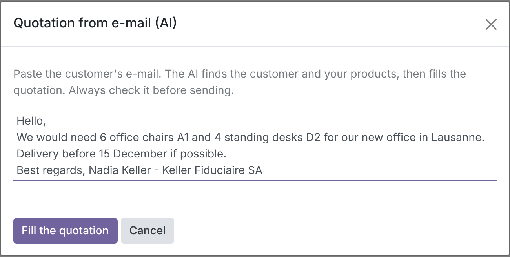
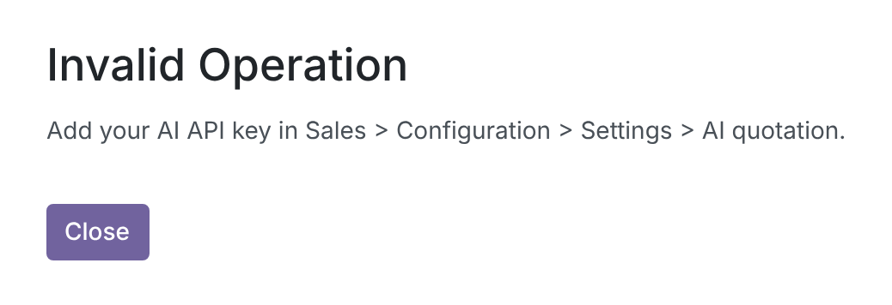
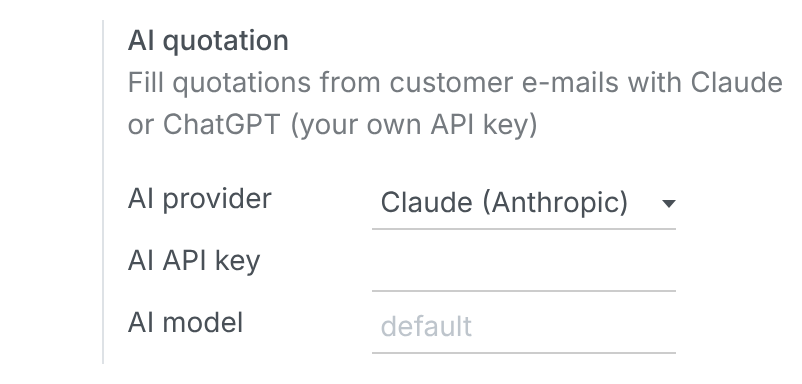

Free module for Odoo 17 · Sales
For sales people who retype e-mailed requests into quotations.
You need your own API key from Anthropic or OpenAI. The provider bills you for each use.
17 automated tests with simulated AI answers on Odoo 17 Community · screenshots from the Odoo 18 version · English and French · LGPL-3
By Alexandre Gabriel, independent Odoo developer. Need it adapted to your company? See below.

The window before sending: you paste the e-mail, then click Fill the quotation. No AI result is shown on this page: the module was tested with simulated AI answers only. Demo data, shown in the Odoo 18 version.
Before you install
The API key is yours: you get it from Anthropic or OpenAI, and that provider bills you for each use. The module itself is free.
What is sent to the provider: the text of the e-mail you paste, and the list of your sellable products (Odoo ID, internal reference and name, at most 600), with fixed instructions. Nothing else.
The module was tested with simulated AI answers only, never with a real API key.
1. Add your API key.
Choose the provider, Claude (Anthropic) or ChatGPT (OpenAI), and paste the key you got from it.
2. Paste the customer's e-mail.
Open Sales › Orders › Quotation from e-mail (AI), or click Fill with AI on a quotation. Then click Fill the quotation.
3. Check the draft quotation.
From the menu, the customer is searched by e-mail address, then by name, and created if unknown. From a quotation, its customer is kept. Products that are not in your catalogue are listed in a note line that starts with Not found in your products, to check.

Without a key, Odoo says where to add it: “Add your AI API key in Sales > Configuration > Settings > AI quotation.” Demo data, shown in the Odoo 18 version.
Where: Sales › Configuration › Settings › Quotations & Orders › AI quotation
| Setting | What it does | Default |
|---|---|---|
| AI provider | Claude (Anthropic) or ChatGPT (OpenAI). | Claude (Anthropic) |
| AI API key | Your own key from the provider. Without it, nothing is sent. | Empty |
| AI model | Leave empty to use the default model of the module. | Empty |

The settings, in Sales: provider, your API key, and the model (empty = the default one). Demo data, shown in the Odoo 18 version.
| Tested on | Odoo 17 Community. Developed and tested with 17 automated tests for this module, 182 for the whole suite of 18 modules. In these tests the AI answers are simulated. |
|---|---|
| Screenshots | Taken in the Odoo 18 version of this module. The screens of the Odoo 17 version were opened in a browser: what the module adds is there, and no error was shown. |
| Not tested on | Odoo Enterprise. |
| Odoo 18 | An 18.0 version exists on its own branch. |
| Needs | The Odoo app Sales. |
| Outside service | Anthropic or OpenAI, with your own API key. Paid by you to the provider. |
| Languages | English and French. No German translation. |
| Licence | LGPL-3. Free. |
Replace the code, then upgrade on the command line, before anyone signs in, all the modules of this suite that are installed, in one go:
odoo-bin -d <database> -u <module>,<module> --stop-after-init
Three modules of the suite add fields to contacts and companies. Until they are upgraded, Odoo refuses the sign-in.
I adapt it to the way you work, or build the small Odoo feature you are missing.
Fixed price announced before I start, paid on delivery. I answer within one working day, with that price or with the question I still need to set it.
Alexandre Gabriel, independent Odoo developer in Lausanne
alexandre@alexandregabriel.ch · alexandregabriel.ch
En français : décrivez votre besoin en deux lignes. Je vous réponds sous un jour ouvré, avec un prix fixe ou la question qui me manque pour le fixer.